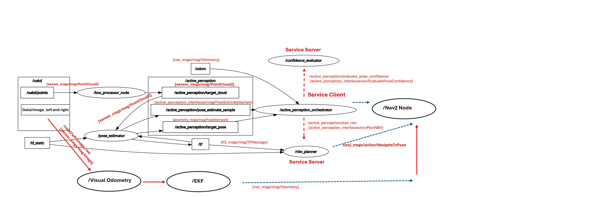
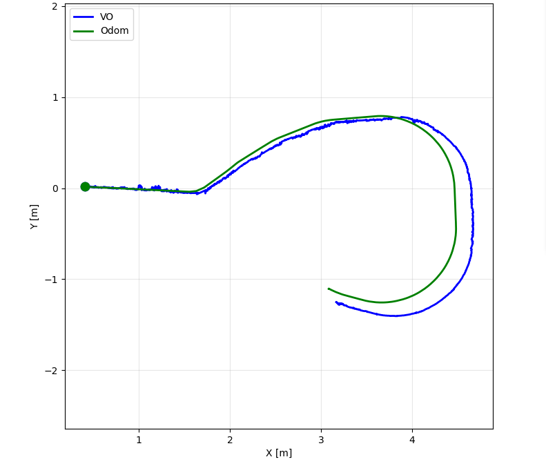
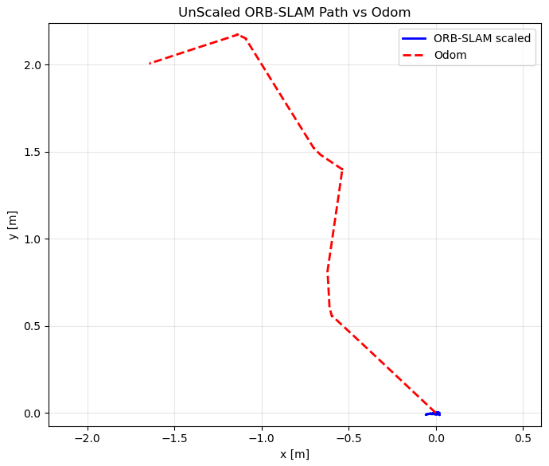

Active Perception for Object Localization
A TurtleBot4 system that does not just take one picture and guess. It estimates a target object pose from RGB-D data, scores how much it trusts that estimate, and moves itself to a better viewpoint whenever it is not confident enough, all while Nav2 handles the actual driving.
Mission
The project addresses a simple sounding problem that gets hard fast: locate a target object with a mobile robot in an indoor space, without a pre built map, using only what the robot can see. The robot looks at the scene with its onboard RGB-D camera, estimates the object pose in its own local frame, then asks itself a question a single snapshot never has to answer: is this estimate actually good enough to act on?
When the answer is no, the robot picks a new nearby viewpoint expected to reduce that uncertainty, drives there with Nav2, and estimates again. The loop repeats until the pose estimate is stable and confident. That loop, not any single algorithm inside it, is the actual contribution: localization through closed loop active perception rather than one static observation.
System architecture
The system is organized as a perception to estimation to planning to actuation pipeline, with each stage owned by a different subsystem.
- RGB-D and LiDAR
- Object pose and visual odometry
- Confidence scoring
- Next best view planning
- Nav2 navigation
- Differential drive actuation

Perception
Two detection nodes, one for cylinders and one for boxes, share a common preprocessing pipeline: spatial filtering, voxel downsampling, and floor removal. The box detector was the one that needed real iteration. An early PCA only approach was not reliable enough, so the final version filters candidate points with a color model tuned for cardboard, forms clusters, and fits an upright box by checking footprint and height, rejecting clusters that fail basic geometric sanity checks. A pose estimator then turns the segmented cloud into a centroid and orientation in the odometry frame.
Confidence and next best view
A confidence evaluator watches a short history of pose estimates and scores four things: positional variance, yaw variance, mean point count, and mean anisotropy ratio. If that score clears the threshold, the robot stops and trusts the estimate. If not, a next best view planner samples candidate viewpoints around the target, scores them by radius error, travel distance, and heading change, and hands the best one to Nav2 as a new goal.
Localization
Robot motion is estimated with ORB SLAM3 stereo visual odometry on the onboard OAK D camera, fused with the IMU in an EKF. This is the part of the system that ended up teaching the most, covered in the results section below.
Results and honest limitations
The headline finding was not a success metric, it was a diagnosis. Comparing the visual odometry path against wheel odometry on recorded runs showed strong agreement on straight segments and a clear divergence on curved ones.
- Straight path error about 0.05 m Peak near 0.09 m over the 0 to 30 second window
- Curved path error about 0.18 m Peak near 0.24 m over the 30 to 70 second window
- Left/right camera offset about 33 ms Median pairing error across the stereo stream

The root cause traced back to hardware, not algorithms: the left and right stereo images were arriving roughly 33 milliseconds apart. That is enough offset to hurt stereo depth matching during motion, which is exactly when accurate depth matters most. Two pairing strategies, frame to frame and timestamp based, both degraded once that offset grew.

Other failure modes worth naming rather than hiding: point clouds did not publish automatically and needed explicit handling in the TurtleBot4 bringup stack, fast turns introduced motion blur that thinned out stable feature matches, and low texture scenes weakened tracking further. The mitigation path was practical rather than clever: pair frames by timestamp, tighten the sync tolerance, and record bags directly on the robot to avoid losing data over the network.
Safety design
Because the robot moves autonomously between viewpoints, the system was built to fail toward a stop rather than toward motion. A deadman timeout forces a zero velocity command if no fresh control command arrives in time. Sensor and localization dropout, on LiDAR scans or odometry, triggers an immediate safe stop that is not lifted until the sensor stream is healthy again for a sustained window. Every safety trigger is logged with its source, so debugging does not depend on memory of what happened during a run.
Team
- Mohammad NasrPerception and planning: cylinder and box detection, pose estimation, confidence scoring, next best view planning, orchestration
- Vikas NarangLocalization: ORB SLAM3 visual odometry integration and EKF fusion
- KhaledNavigation: Nav2 integration design, action and service interfaces, safety workflow documentation